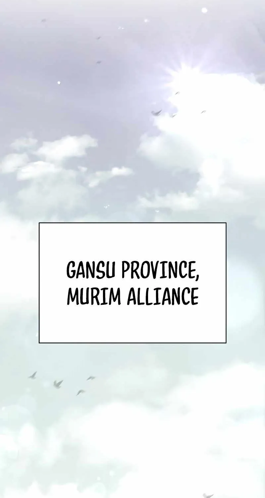
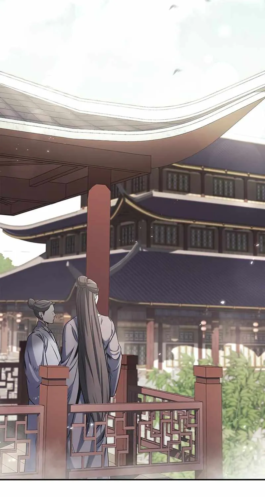
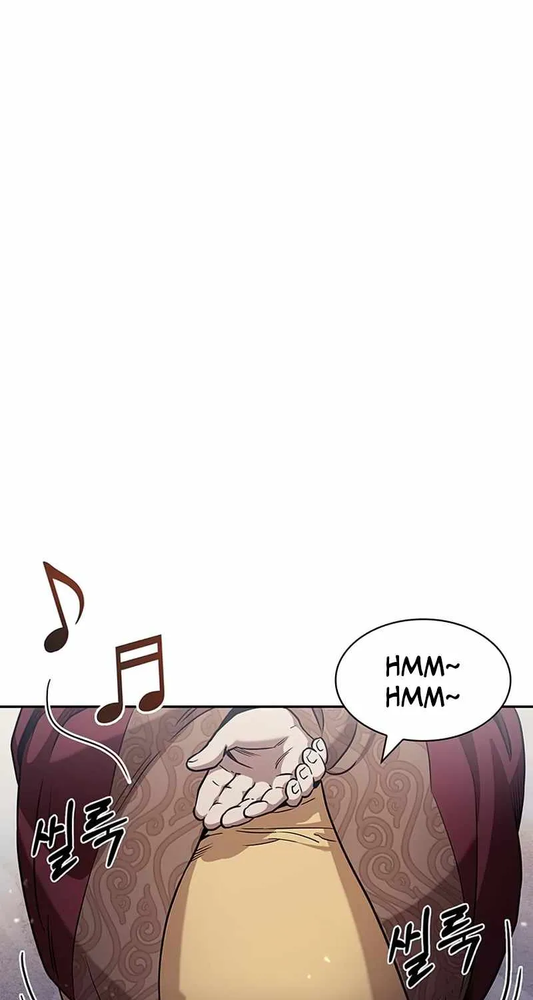
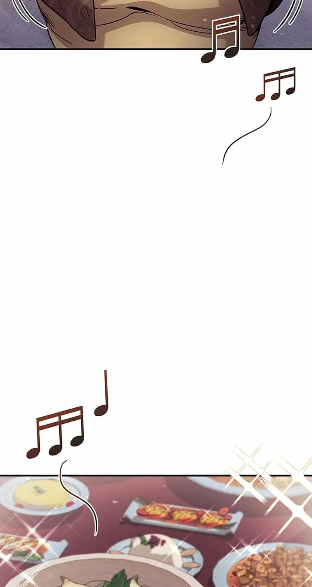
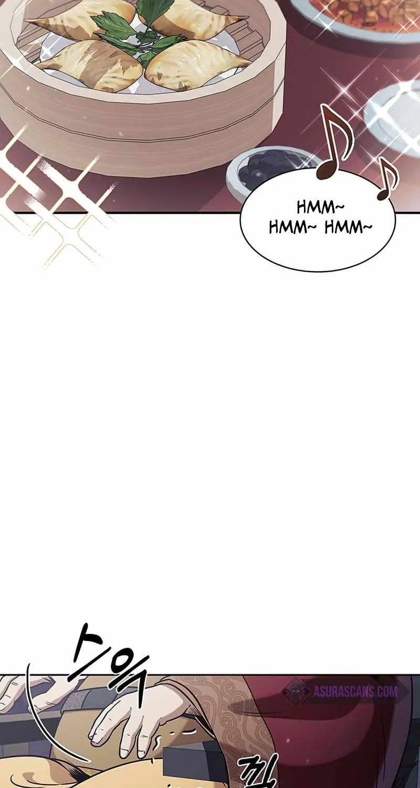
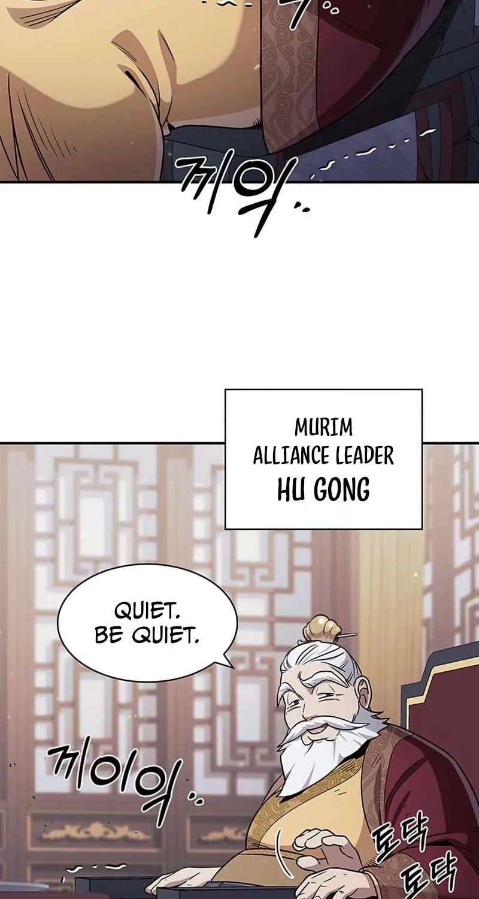

❯
❯
Scène 1
Établissement du lieu : ciel + calme + profondeur.
Effets : oiseaux (micro-dérive), particules, léger souffle de lumière.

Scène 2
Architecture + observateurs : parallax doux pour donner de la profondeur.
Effets : poussières/pollen, souffle discret.

♪
♫
♪
Scène 3
Musique + “hmm~” : notes apparaissent et dérivent au scroll.
Effets : notes (fade + drift), micro respiration.

♪
♫
Scène 4
Gourmandise / ASMR : scintillement très lent + notes.
Effets : “glints” (opacité), notes (dérive).

Scène 5
Tapotement / bruit : petit “shake” localisé sur la fin de scène.
Effets : micro shake (dernier tiers).

Scène 6
Révélation : l’autorité s’installe. Un léger focus + stabilité.
Effets : micro respiration, scintillement minimal.
Pour que ça marche chez toi :
1) Mets tes images dans un dossier assets/ à côté de ce fichier, avec les noms indiqués
(ou modifie les data-src).
2) Ouvre ce fichier via un petit serveur local (ex: python -m http.server) pour éviter les soucis de chargement.
3) Ensuite, on peut enrichir : calques multiples, masque d’ombre, depth map, sprite sheets, etc.